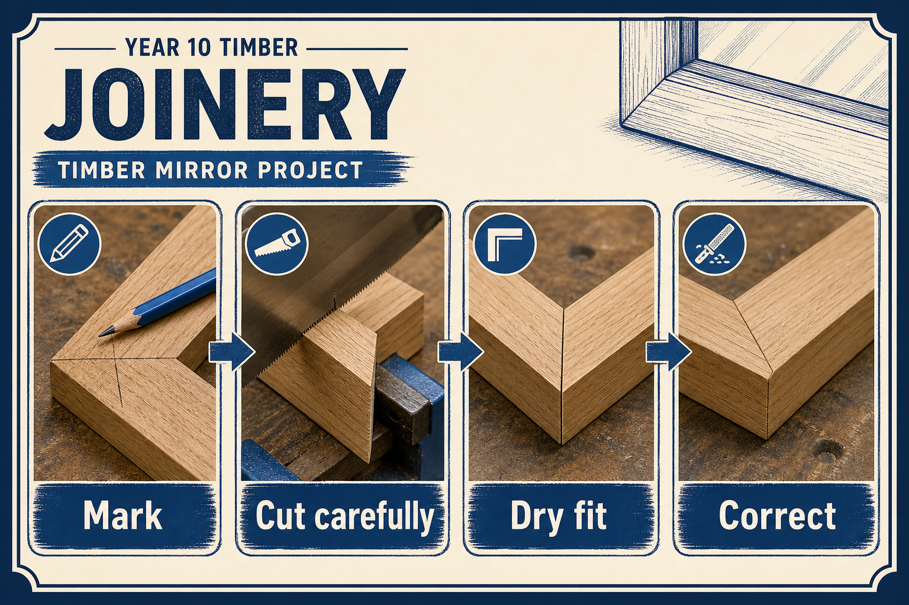
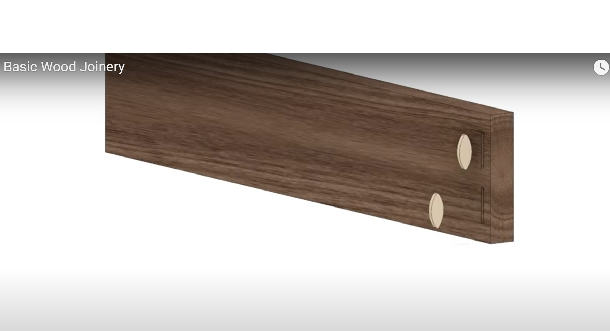
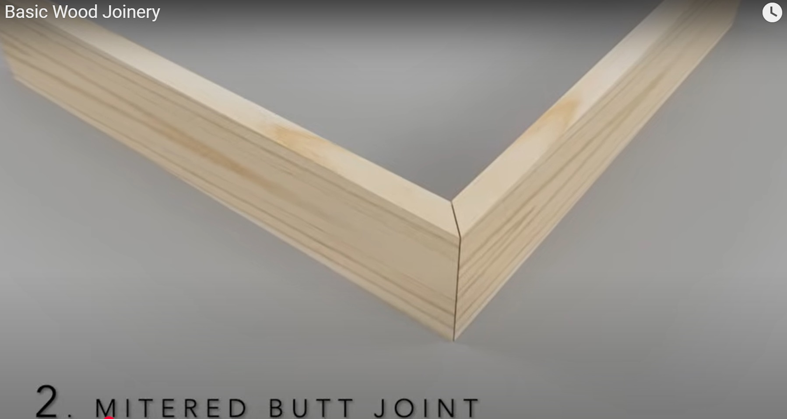
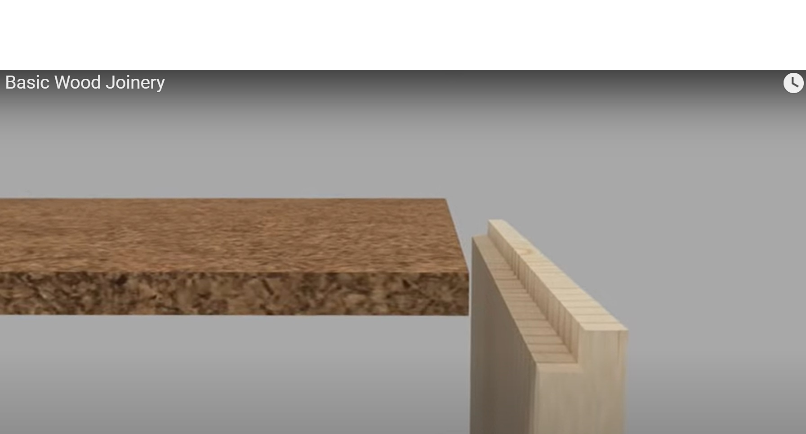

Why It Matters
Joints carry the frame. If joints are inaccurate, the mirror may twist, show gaps or fail when handled.
Theory Topic
How timber parts become a strong, square mirror frame.
Module presentation
Use the presentation to preview Joinery before working through the theory, videos, checks and written evidence.
Theory Block 4
Joinery is how separate timber pieces become a strong frame.
Joints carry the frame. If joints are inaccurate, the mirror may twist, show gaps or fail when handled.
Round pins align and strengthen a joint.
Dowels are useful when holes are drilled accurately. Poor alignment causes gaps or twisted frames.
Oval biscuits help align boards and add glue area.
Biscuit joints are quicker but not usually as strong as a well-made mortise and tenon.
A tenon fits into a matching mortise to create a strong frame joint.
The shoulders should close neatly, the tenon should fit firmly, and the joint must be tested before glue.

| Part | Job |
|---|---|
| Mortise | The rectangular hole or slot. |
| Tenon | The tongue that fits into the mortise. |
| Shoulder | The face that closes against the other timber piece. |
| Cheek | The flat side of the tenon. |
The mirror drawing is the source of truth. It tells you which joint, rebate or reinforcement the project requires. Do not substitute a different joint simply because it looks quicker or you have used it before.
A frame joint needs to hold the rails and stiles in position, provide enough glue surface and resist racking – the frame twisting out of square. The final choice also depends on the approved tools, safe setup and teacher direction.
| Joint | Strength | Accuracy Risk |
|---|---|---|
| Dowel | Good when dowels are well placed and glued. | Drilled holes must line up exactly. |
| Biscuit | Good alignment support and extra glue area. | Slots must be centred and the frame still needs clamping square. |
| Domino | Strong floating tenon with accurate machine setup. | Incorrect fence or depth setting can misalign parts quickly. |
| Mortise and tenon | Very strong because of mechanical fit and large glue area. | Shoulders and cheeks must be cut cleanly or gaps will show. |
| Mitre with reinforcement | Can look neat for frames when reinforced. | Small angle errors create visible gaps at corners. |
Choose a datum face, datum edge and squared datum end before marking. Mark every matching joint from the same reference surfaces. Timber is not always perfectly even in thickness, so measuring one joint from the face and another from the back can leave the frame misaligned.
Where practical, place matching parts together and pair mark them. Label the parts clearly – for example, top rail, bottom rail, left side, right side, face and back – so they are not turned around during fitting.
Mark the timber to be removed, then cut on the waste side of the line. A saw kerf removes material. Cutting through the line can leave a tenon too small or a mortise too wide.
A dry fit is a full assembly without glue. It gives you one safe chance to identify a joint that is tight, loose, upside down or out of square before the assembly becomes permanent.
If a joint is too tight, find the exact contact point, remove a very small amount using the approved tool, and test again. Never force it together with heavy hammer blows or use clamps to hide a poorly cut joint.


| Common mistake | Likely result | Better approach |
|---|---|---|
| Measuring from different faces | Joints do not line up | Use the same datum face and edge |
| Cutting through the marked line | A loose or undersized joint | Cut on the waste side and fit carefully |
| Removing too much during fitting | Gaps and poor glue contact | Remove small amounts and test often |
| Forcing a tight joint | Split timber or damaged shoulders | Locate the tight area and adjust it carefully |
| Gluing before the dry fit | Problems become difficult to correct | Assemble and check the whole frame first |




Answer the Quick Check, then return to the theory menu when you are ready for another topic.